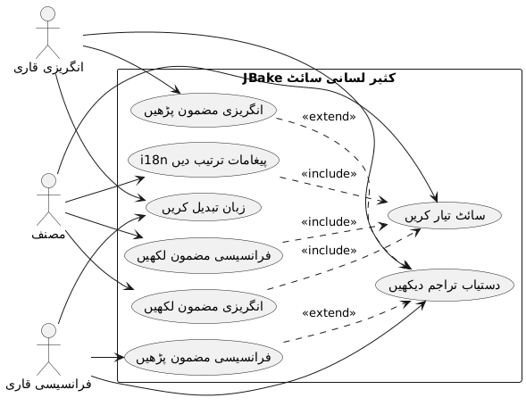
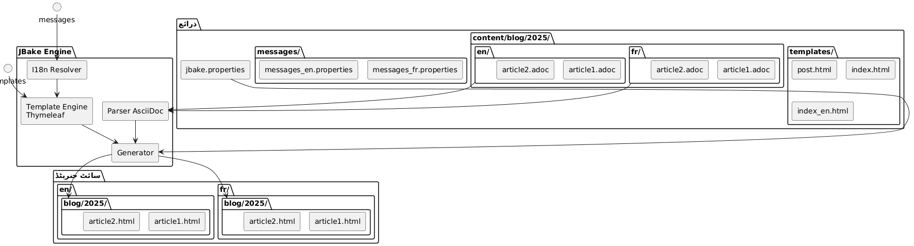
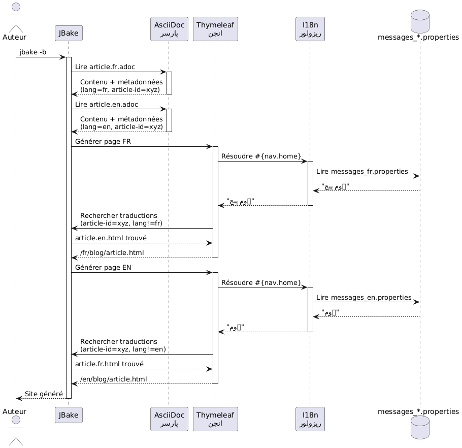
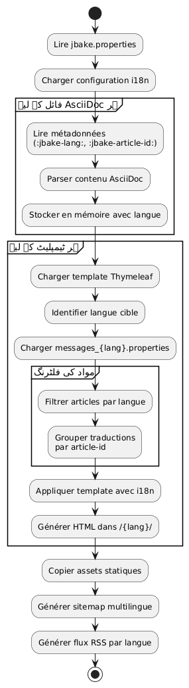
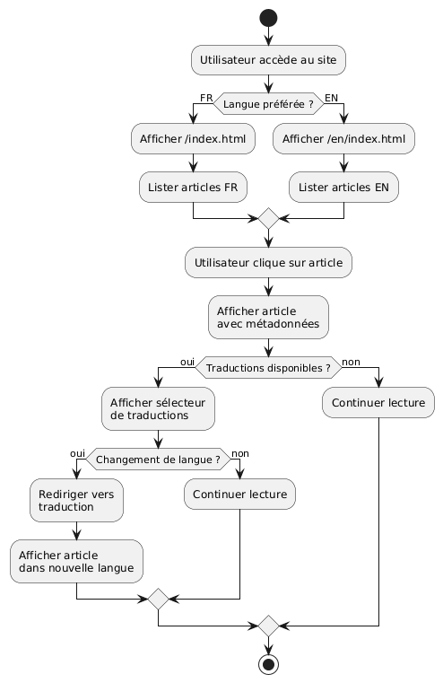
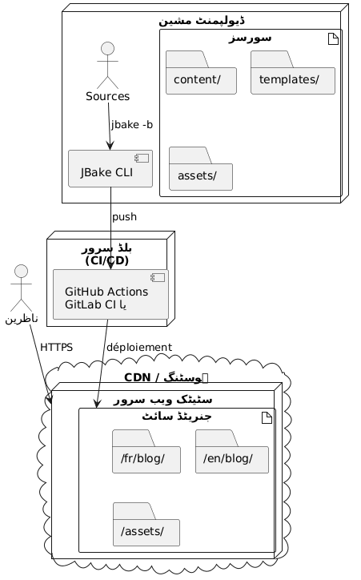

Thymeleaf کے ساتھ ایک JBake اسٹیٹک سائٹ کی انٹرنیشنلائزیشن
شائع شدہ: 20 October 2025
مقدمہ
سٹیٹیک ویب سائیٹ کا انٹرنیشنلائزیشن (i18n) پہلی نظر میں دیکھنے پر پیچیدہ نظر آ سکتا ہے، لیکن JBake Thymeleaf کے ساتھ مل کر اس کی ایلیگیٹ حل multilingual ویب سائیٹ بنانے کے لیے فراہم کرتا ہے۔ اس مضامین میں، میں دکھاوٴ گا/گی کہ میں اپنے بلاگ پر i18n کی کیسے ترتیب دی ہے، ٹیمپلیٹنگ اور متعدد زبانی مقالات کے منیجمنت دونوں کو cover کر کے۔
یوز کیس ڈائگرام (استعمال کا مورد)

بین الاقوامی سازی کی معماری
ہماری 접근 دو ستونوں پر مبنی ہے :
-
ٹیمپلنٹنگ کا i18n: Thymeleaf پیغام فائلوں کا استعمال انٹرفیس کے عناصر کے لیے
-
محتوا کا i18n: زبان کے مطابق مضامین کی تنظیم ایک مخصوص فولڈر ساخت میں
سٹرکچر ڈائگرام (فائلوں کی تنظیم)

یہ طریقہ کیوں؟
یہ الگ کرنے کی اجازت دیتا ہے :
-
انٹرーフیس میں ہموار برقرار رکھیں، کسی بھی زبان ہو
-
محتوا اور مضامین کی ترجمات کو مستقل طور پر منظم کریں
-
نئی زبانوں شامل کرنے کو آسان بنائیں بغیر بڑے ریفакٹرنگ کے
-
اجازت دینے مضامین صرف چند زبانیں میں只直اب
کمپوننٹ ڈائیگرام

Thymeleaf کے ساتھ ٹیمپلیٹنگ کا I18n
پیام فائلوں کا ڈھانچہ
پہلا قدم یہ ہے کہ ہر سپورٹ کردہ زبان کے لئے پراپرٹی فائل بنائیں :
src/jbake/templates/
├── messages.properties # Fallback par défaut
├── messages_fr.properties # Français
├── messages_en.properties # Anglais
└── messages_de.properties # Allemandپیغام فائلوں کا محتوا
یہ ایک فائل کا مثال ہے`messages_fr.properties`:
# Navigation
nav.home=Accueil
nav.blog=Blog
nav.about=À propos
nav.contact=Contact
# Articles
article.readmore=Lire la suite
article.published=Publié le
article.tags=Étiquettes
article.also.available=Également disponible en
# Interface
site.title=Mon Blog Technique
site.description=Partage de connaissances et expériences
footer.copyright=© 2025 Tous droits réservés
search.placeholder=Rechercher un article...اور اس کا انگریزی معادل`messages_en.properties`(No output, as the input text is empty)
# Navigation
nav.home=Home
nav.blog=Blog
nav.about=About
nav.contact=Contact
# Articles
article.readmore=Read more
article.published=Published on
article.tags=Tags
article.also.available=Also available in
# Interface
site.title=My Tech Blog
site.description=Sharing knowledge and experiences
footer.copyright=© 2025 All rights reserved
search.placeholder=Search articles...ٹیپلیٹس میں استعمال
آپ کے Thymeleaf ٹیمپلیٹس میں، سینٹکس استعمال کریں`#{}`پیغامات تک رسائی حاصل کرنے کے لیے :
<!DOCTYPE html>
<html xmlns:th="http://www.thymeleaf.org">
<head>
<title th:text="#{site.title}">Mon Blog</title>
<meta name="description" th:content="#{site.description}" />
</head>
<body>
<nav>
<a th:href="@{/}" th:text="#{nav.home}">Accueil</a>
<a th:href="@{/blog/}" th:text="#{nav.blog}">Blog</a>
<a th:href="@{/about.html}" th:text="#{nav.about}">À propos</a>
</nav>
<footer>
<p th:text="#{footer.copyright}">Copyright</p>
</footer>
</body>
</html>سیکوئنس ڈائگرام - i18n کا حل

JBake میں مقامی ماحول کی تنظیم
آپ کی فائل میں`jbake.properties`، ڈیفالٹ لوکیل سیٹ کریں :
# Locale par défaut
thymeleaf.locale=fr
# Encodage
template.encoding=UTF-8مقالات کی بین الاقوامی تنظیم: فوڈرز کے ذریعے ترتیب
فلوڈائگرام (Flow) - پیدائش

فولڈرز کی ساخت
نام فائلوں میں Sufix استعمال کرنے کے بجائے، میں ڈائرکٹری (folder) organization اختیار کی ہے جو زیادہ وضوح اور برقرار رکھنے کی صلاحیت فراہم کرتی ہے:
content/blog/
├── 2024/
│ ├── fr/
│ │ ├── introduction-jbake.adoc
│ │ ├── guide-thymeleaf.adoc
│ │ └── astuces-asciidoc.adoc
│ └── en/
│ ├── introduction-jbake.adoc
│ ├── thymeleaf-guide.adoc
│ └── asciidoc-tips.adoc
└── 2025/
├── fr/
│ └── internationalisation-jbake.adoc
└── en/
└── jbake-internationalization.adocاسApproach کے فوائد
یہ ڈھانچہ کئی فائدے پیش کرتا ہے:
-
واضح تفریق: ہر زبان کا اپنا جگہ ہے
-
لچکدار نامگذاری: فائلوں کے نام زبان کے مطابق مختلف ہو سکتے ہیں
-
قابلِ توسیع: نئی زبان شامل کرنا آسان ہے
-
طبیعی تنظیم: JBake کیemporal logic کا پیروی کرتا ہے
مضامین کے میٹا ڈیٹا
ہر مضامین میں meta ڈیٹا شامل ہونا چاہیے تاکہ ترجمات کے درمیان رابطہ بنایا جا سکے۔ یہ ایک مثال ہے:
فرانسیسی ورژن (2025/fr/internationalisation-jbake.adoc) :
= Internationalisation d'un site statique JBake
:jbake-type: post
:jbake-status: published
:jbake-date: 2025-10-20
:jbake-lang: ur
:jbake-article-id: jbake-i18n-thymeleaf
:jbake-tags: jbake, thymeleaf, i18n
:jbake-description: Guide pour mettre en place l'i18n avec JBakeانگریزی ورژن (2025/en/jbake-internationalization.adoc) :
= Internationalizing a JBake Static Site
:jbake-type: post
:jbake-status: published
:jbake-date: 2025-10-20
:jbake-lang: ur
:jbake-article-id: jbake-i18n-thymeleaf
:jbake-tags: jbake, thymeleaf, i18n
:jbake-description: Guide to implement i18n with JBakeنوٹ: خاصیت`:jbake-article-id:`ضروری ہے : یہ ایک ہی مضمون کی مختلف ترجمعات کو جورنی کی اجازت دےتا ہے
URLs کی ترتیب
میں`jbake.properties`, URL پٹرن کو زبان شامل کرنے کے لیے سیٹ اپ کریں :
# Pattern d'URL avec langue
post.permalink.pattern=:lang/blog/:year/:name.html
# Langue par défaut
site.default.lang=frیہ اس قسم کے URL بنائے گا :
-
/fr/blog/2025/internationalisation-jbake.html -
/en/blog/2025/jbake-internationalization.html
مُلتانی زبانوں کی دکھائی کے لیے ٹیمپلیٹس
مقالہ ٹیملپلیٹ زبان سلیکٹر کے ساتھ
ایک ٹیمپلیٹ بنائیں`post.html`جس سے دستیاب ترجمات دکھائی جاتی ہیں :
<!DOCTYPE html>
<html xmlns:th="http://www.thymeleaf.org">
<head>
<title th:text="${content.title}">Article</title>
</head>
<body>
<article>
<header>
<h1 th:text="${content.title}">Titre</h1>
<div class="article-meta">
<time th:text="${#dates.format(content.date, 'dd MMMM yyyy')}"
th:attr="datetime=${#dates.format(content.date, 'yyyy-MM-dd')}">
Date
</time>
<!-- Sélecteur de traductions -->
<div class="translations" th:if="${content['article-id']}">
<span th:text="#{article.also.available}">Aussi disponible en :</span>
<ul class="language-list">
<li th:each="post : ${published_posts}"
th:if="${post['article-id'] == content['article-id'] and post.lang != content.lang}">
<a th:href="${post.uri}"
th:text="${post.lang.toUpperCase()}">
LANG
</a>
</li>
</ul>
</div>
</div>
</header>
<div class="content" th:utext="${content.body}">
Contenu de l'article
</div>
<footer class="article-footer">
<div class="tags" th:if="${content.tags}">
<span th:text="#{article.tags}">Étiquettes :</span>
<span th:each="tag : ${content.tags}">
<a th:href="@{/tags/{tag}.html(tag=${tag})}"
th:text="${tag}">tag</a>
</span>
</div>
</footer>
</article>
</body>
</html>زبان کے مطابق فیلٹرڈ انڈیکس
ہر زبان کے لیے ان ڈیکس کے ٹیMPLेट بنائیں :
index.html(فرانسیسی انڈیکس) :
<!DOCTYPE html>
<html xmlns:th="http://www.thymeleaf.org">
<head>
<title th:text="#{site.title}">Mon Blog</title>
</head>
<body>
<main>
<h1 th:text="#{nav.blog}">Blog</h1>
<div class="articles-list">
<article th:each="post : ${published_posts}"
th:if="${post.lang == 'fr'}">
<h2>
<a th:href="${post.uri}" th:text="${post.title}">Titre</a>
</h2>
<time th:text="${#dates.format(post.date, 'dd MMMM yyyy')}">
Date
</time>
<p th:text="${post.description}">Description</p>
<a th:href="${post.uri}" th:text="#{article.readmore}">
Lire la suite
</a>
</article>
</div>
</main>
</body>
</html>index_en.html(انگریزی انڈیکس) :
<!DOCTYPE html>
<html xmlns:th="http://www.thymeleaf.org">
<head>
<title th:text="#{site.title}">My Blog</title>
</head>
<body>
<main>
<h1 th:text="#{nav.blog}">Blog</h1>
<div class="articles-list">
<article th:each="post : ${published_posts}"
th:if="${post.lang == 'en'}">
<h2>
<a th:href="${post.uri}" th:text="${post.title}">Title</a>
</h2>
<time th:text="${#dates.format(post.date, 'dd MMMM yyyy')}">
Date
</time>
<p th:text="${post.description}">Description</p>
<a th:href="${post.uri}" th:text="#{article.readmore}">
Read more
</a>
</article>
</div>
</main>
</body>
</html>لغات کے درمیان ناویگیشن
غلوبل زبان سلیکٹر
فلو ڈائگرام - صارف کی پڑھائی

اپنے اصلی ٹیمپلیت میں زبان کا سلیکٹر شامل کریں :
<nav class="language-switcher">
<a href="/index.html"
th:classappend="${content.lang == 'fr'} ? 'active'"
title="Français">
🇫🇷 FR
</a>
<a href="/en/index.html"
th:classappend="${content.lang == 'en'} ? 'active'"
title="English">
🇬🇧 EN
</a>
</nav>سیلیکٹر کے لیے CSS کا اسٹائل
.language-switcher {
display: flex;
gap: 1rem;
padding: 0.5rem;
background: #f5f5f5;
border-radius: 4px;
}
.language-switcher a {
padding: 0.5rem 1rem;
text-decoration: none;
color: #333;
border-radius: 4px;
transition: background 0.2s;
}
.language-switcher a:hover {
background: #e0e0e0;
}
.language-switcher a.active {
background: #007bff;
color: white;
}
.translations {
margin: 1rem 0;
padding: 1rem;
background: #f8f9fa;
border-left: 4px solid #007bff;
}
.language-list {
display: inline-flex;
gap: 0.5rem;
list-style: none;
padding: 0;
margin: 0;
}
.language-list li::after {
content: "•";
margin-left: 0.5rem;
}
.language-list li:last-child::after {
content: "";
}زبان کے حسب RSS فِیڈ
زبان کے طور پر الگ‑الگ RSS فیڈز حاصل کرنے کے لئے، الگ ٹیمپلیٹ بنائیں :
feed.xml(فلکس فرانسیسی) :
<?xml version="1.0" encoding="UTF-8"?>
<rss version="2.0" xmlns:th="http://www.thymeleaf.org">
<channel>
<title th:text="#{site.title}">Mon Blog</title>
<link th:text="${config.site_host}">http://example.com</link>
<description th:text="#{site.description}">Description</description>
<language>fr</language>
<item th:each="post : ${published_posts}"
th:if="${post.lang == 'fr'}">
<title th:text="${post.title}">Titre</title>
<link th:text="${config.site_host + post.uri}">Lien</link>
<pubDate th:text="${#dates.format(post.date, 'EEE, dd MMM yyyy HH:mm:ss Z')}">
Date
</pubDate>
<description th:text="${post.description}">Description</description>
</item>
</channel>
</rss>اچھی طریقے کار اور ٹپس
1. مقالے کے شناختی کوڈ کی اتحاد
یقین دلائیں کہ`:jbake-article-id:`ایک ہی مضامین کی تمام ترجموں میں ایک جیسا ہے۔ یکساں فارم استعمال کریں :
-
انگریزی شناختیں ترجیح دیں، عالمیت کے لیے
-
الفاظ کو الگ کرنے کے لیے ہائفن استعمال کریں
-
خصوصی حروف بچیں
2. متوافق تاریخیں
ایک مضامین کی تمام ترجمات کی ایک ہی تاریخ اشاعت ہو چاہیے`:jbake-date:`). یہ ترتیب دینے اور زمانے کے مطابق دکھانے میں آسان بناتا ہے۔
3. متعدد زبانوں کے ٹیگز
Tags کے لیے، آپ کے دو انتخاب ہیں :
اختیار 1 : عام ٹیگز انگریزی میں
:jbake-tags: java, spring-boot, microservicesاختیار 2 : ٹیگز مپنگ کے ساتھ ترجمہ شدہ
# Version française
:jbake-tags: java, spring-boot, microservices
# Version anglaise
:jbake-tags: java, spring-boot, microservices4. غیر ترجمہ شدہ مضامین کی انتظام
ہر مضمون کو ترجمہ کرنا لازمی نہیں۔ اگر ایک مضمون صرف ایک زبان میں موجود ہو، تو وہ دوسری زبان کی فہرست میں صرف نہیں دکھائی دے گا۔
5. متعدد زبانوں کا سائیٹ میپ
ایک سائٹ میپ بنائیں جو تمام زبانوں کو شامل کرے :
<?xml version="1.0" encoding="UTF-8"?>
<urlset xmlns="http://www.sitemaps.org/schemas/sitemap/0.9"
xmlns:xhtml="http://www.w3.org/1999/xhtml"
xmlns:th="http://www.thymeleaf.org">
<url th:each="post : ${published_posts}">
<loc th:text="${config.site_host + post.uri}">URL</loc>
<lastmod th:text="${#dates.format(post.date, 'yyyy-MM-dd')}">Date</lastmod>
<!-- Liens alternatifs pour les traductions -->
<xhtml:link th:each="translation : ${published_posts}"
th:if="${translation['article-id'] == post['article-id'] and translation.lang != post.lang}"
rel="alternate"
th:attr="hreflang=${translation.lang},href=${config.site_host + translation.uri}" />
</url>
</urlset>نتیجہ
JBake سایت کے ساتھ Thymeleaf ka انٹرنیشنلائزین یک مضبوط اور قابلِ حفظطریقہ ہے۔پیغام کے فائل کے ذریعے ٹیمپلیٹنگ سے i18n ko alg karke aur فلڈر انظام کے ذریعے مضمون سے i18n ko alg karke، آپ ایک لچکدار نظام hasil karte hain jo آسانی سے发展 کر سکتا ہے۔
مہتاوی نکات :
-
Thymeleaf پیغام فائلیںصارف انٹر فیس کے لیے
-
فوولڈرز پر تنظیم(سال/زبان) کے لیے مضامین
-
مضمون کے شناختی نمبرترجمہ جات کو ربط کرنے کے لیے
-
مخصوص ٹیمپلیٹسہر زبان کے لیے
-
واضح URLsزبان کا کوڈ شامل
ڈیپلویمنٹ ڈائگرام

یہ معماری آپ کو صرف دو زبانیں لے کر آسانی سے شروع کرنے اور مزید زبانوں شامل کرنے کی اجازت دیتی ہے، جس کے لیے کبھی بھی بڑے ریفакториنگ کی ضرورت نہیں پڑتی۔ سب کچھ کامل طور پر Static اور کارآمد رہتا ہے، JBake کی فلسفے کی پابندی کرتے ہوئے۔
خوش آمدید، متعدد زبانوں کی ترقی! 🌍